작업 흐름
- 입력
- 주제 한 줄(누가 · 무엇을 건너 · 낮인지 밤인지), 참고 영상이나 이미지
- 브리프
- 지형 표(무엇을 읽는지 · 기억으로 무엇을 하는지 · 얼마나 오래 · 발소리 · 느려지거나 잠기는지), 지도, 걷는 이(무게 · 그림 · 따라오는 것 · 빛), 경로 표
- 설계
- 지형별
base·px,map(x, y)와 소품, 걷는 이의 픽셀 그림과 숫자, 경로. 경로 지도(?map=1)와 캐스트 시트(?sheet=cast)로 확인 - 확인
- 스틸 채점과 자동 검사: 지형마다 트레일 때문에 바뀐 픽셀 수(+0.5 · 2 · 6초), 지형끼리 다른 반응, 텍스처 노출, 디딘 발 고정, 발자국 위치, 다리 길이, 좌우, 방향, 순간이동, 예비 동작과 회복, 숨 쉬는 대기, 늦게 따라오는 소품, 결정성, 속도
- 출력
- 최근접 확대로 선명한 1920×1080 MP4(지형별 발소리 · 바람 · 물 · 밤 벌레 소리 합성), 영화를 반복하다 키를 누르면 걷는 이를 넘겨받는 라이브 페이지
cd trail-texture-world/examples/oasis-courier
node ../../scripts/check.mjs index.html
node ../../scripts/render.mjs index.html --q map=1 --stills 0
node ../../scripts/render.mjs index.html --q sheet=cast --stills 0
node ../../scripts/render.mjs index.html
node ../../scripts/new-world.mjs ../../../my-walk # 새 주제요구 사항: Node + Playwright Chromium, ffmpeg. GPU와 네트워크가 필요 없고, 40초 영상을 CPU로 1–2분에 렌더합니다. 단계별 순서는 SKILL.md에 있습니다.
샘플
같은 엔진과 키트로 주제만 바꿔 새로 설계한 예제 두 편과 시작 템플릿, 그리고 설계를 확인하는 화면입니다. 카드를 누르면 새 탭에서 그 장면이 그 순간에 멈춘 채 열리고, 브라우저가 직접 그립니다.
The Last Well 39.5초 · 한낮의 사막
소금 배달꾼이 모래 언덕과 대상로를 지나 마지막 우물에 닿습니다. 다섯 지형이 하나의 텍스처를 저마다 다르게 읽습니다.
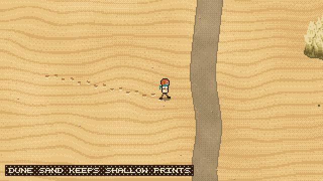
6.8초모래의 발자국sand
어두운 윗벽과 밝은 아랫입술, 바람에 디더로 메워지는 50초
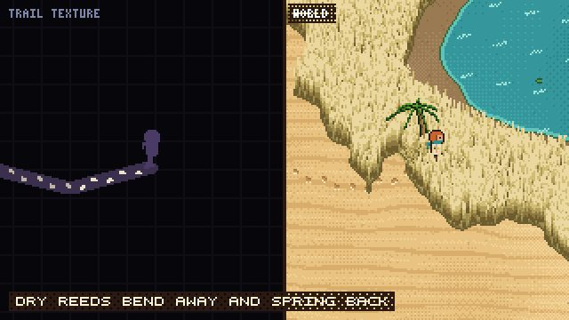
분할 · 15초갈대가 비켜선다reeds
몸이 밀어낸 방향으로 휘고, 넘쳤다가 1.6초에 걸쳐 돌아오는 갈대
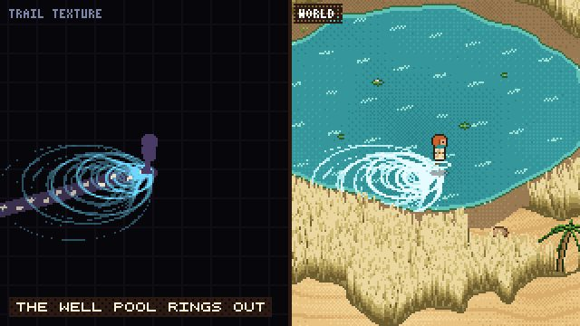
분할 · 19.6초우물 연못의 고리wave
발 디딜 때마다 두 겹의 고리, 몸 둘레의 거품, 다리를 가리는 물높이, 느려지는 걸음
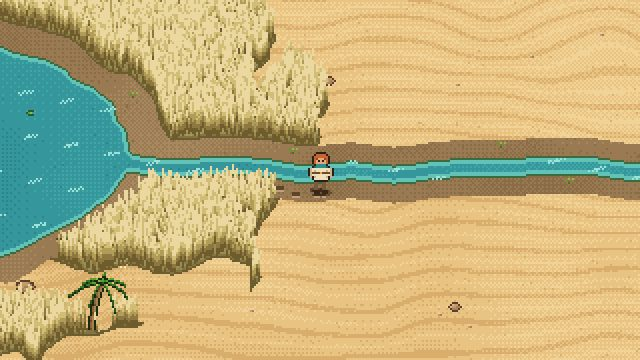
27.8초젖은 기슭mud
물이 고이는 깊은 발자국, 거의 메워지지 않는 80초의 기억
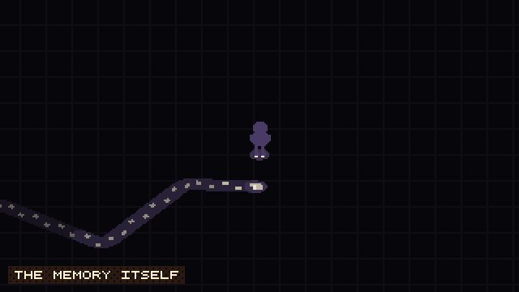
텍스처 · 30.9초기억 그 자체trail
뛰어오른 동안은 땅에 닿지 않아 비어 있는 자리, 착지는 더 깊게
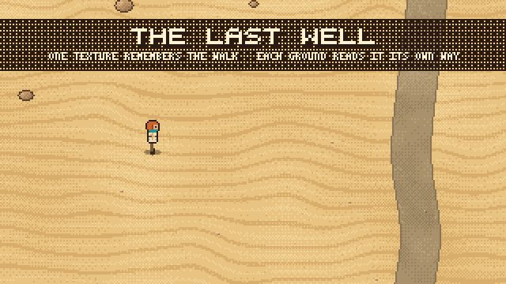
1.2초제목title
숨 쉬고 눈 깜빡이며 서 있는 첫 장면
Lantern Hollow 37초 · 밤의 숲
랜턴을 든 아이가 밤의 숲 골짜기를 건너 집으로 갑니다. 빛은 랜턴과 버섯, 그리고 발밑의 이끼에서만 나옵니다.
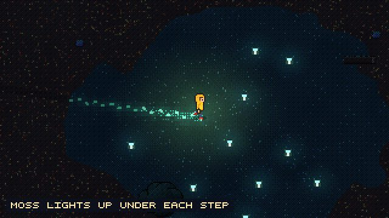
9.6초빛나는 이끼glow
밟은 자리가 빛나 주변을 밝히고 6초에 걸쳐 꺼짐
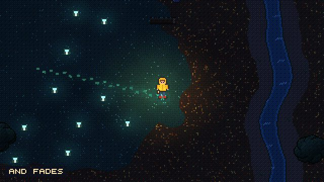
15.6초그리고 꺼진다fade
두 걸음으로 도는 제자리 회전, 숨 쉬는 대기, 흔들리다 멈추는 랜턴
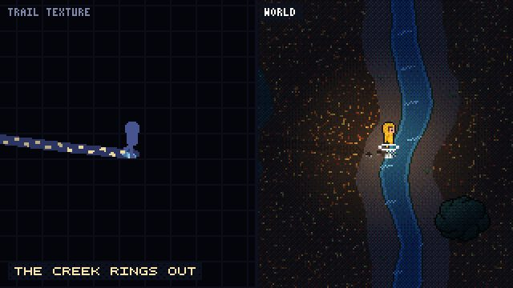
분할 · 20.6초개울을 건너며wave
랜턴 빛을 받는 물결 고리, 무릎까지 잠기는 다리
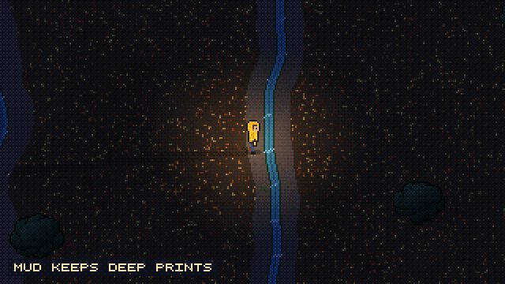
28.4초진흙과 도랑mud · hop
물이 차오르는 깊은 발자국, 웅크렸다가 뛰어 두 발로 착지
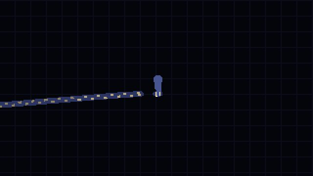
텍스처 · 29.6초기억 그 자체trail
밤이어도 텍스처는 같은 기억, 빛은 지형이 읽을 때 생김
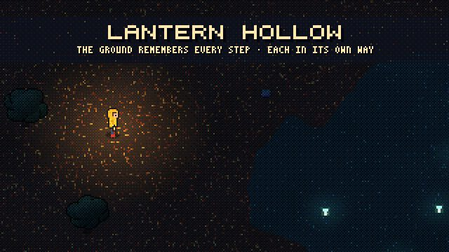
1.5초제목title
5단계로 끊고 디더한 밤빛, 깜빡이는 랜턴
확인 화면 설계 단계
장면을 쓰기 전에 보는 화면입니다. 시작 템플릿도 같은 흐름으로 바꿔 씁니다.
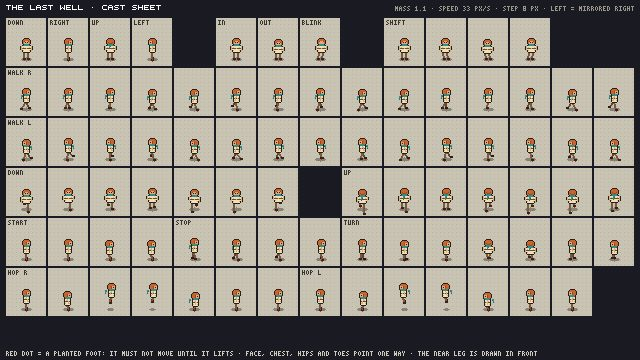
?sheet=cast배달꾼 캐스트 시트
네 방향, 좌우 걷기, 출발 · 정지 · 회전 · 점프. 빨간 점은 움직이면 안 되는 디딘 발
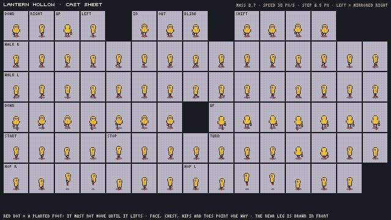
?sheet=cast아이 캐스트 시트
오른손의 랜턴은 왼쪽을 볼 때 몸 뒤로. 비대칭은 거울 반전이 아닌 따라오는 소품으로
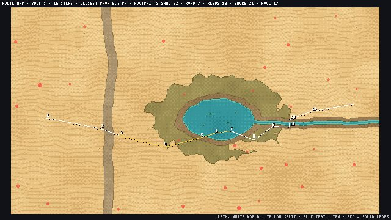
?map=1경로 지도
세계 전체, 보기별 경로, 소품과의 최소 거리, 지형별 발자국 수
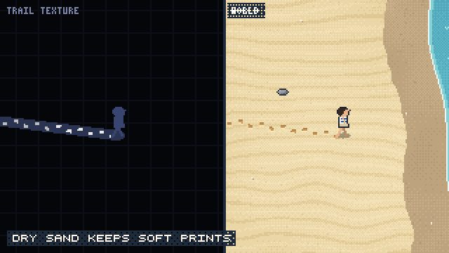
템플릿 · 30초Low Tidetemplates/world.html
new-world.mjs가 복사하는 출발점. 모든 부분을 주제에 맞게 바꿈실제 작품
이 레포에서 만든 스킬입니다. X에서 본 기법(텍스처 하나가 걸은 곳을 기억하고 지형마다 다르게 쓰는 것, 텍스처와 게임을 나란히 보여 주는 화면)만 가져왔고, 엔진과 지형 키트, 두 예제의 걷는 이 · 지도 · 경로는 모두 이 레포의 코드입니다.
링크
- SKILL.md 워크플로
- 폴더 lib · scripts · templates · references · examples
- README.md 빠른 시작
- templates/BRIEF.md 브리프 틀과 스틸 검토 기준
- references/TRAIL.md 텍스처, 지형 쓰는 법, 걷는 이, API
- references/LESSONS.md 겪은 문제와 해결